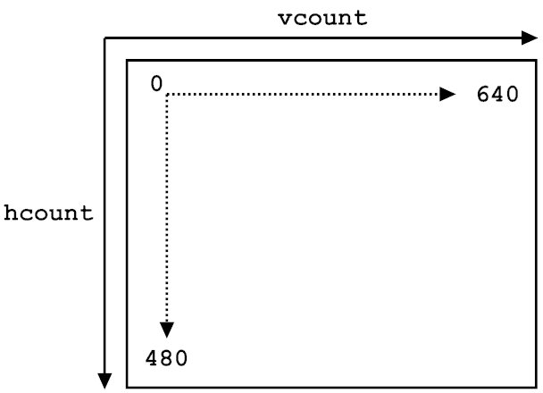

vsync
monitor
pixel map
dobule buffering
vsync
input, output
the timing diagram for hsync and vsync
- Tpw: Time of the pulse width: How long to keep the signal low
- Ts : Time period: One complete row/column of information
- Tdisp : Time of Display: This is the time we can actually display information
- Tfp: Time front porch: The amount of time for the front porch
- Tbp: Time back porch: The amount of time for the back porch
Vsync system call
- Window: DwmGetCompositionTimingInfo()/MonitorFromWindow()/GetMonitorInfo()
- Android: Choreographer.postFrameCallback()
- OSX: CVDisplayLinkSetOutputCallback()
- IOS: CADisplayLink / displayLinkWithTarget:selecor
browser
chrome time line
browser
1/60 = 16.67ms tip!
browser
1/60 = 16.67ms
skia
SkPicture, SkPicturePlayback: records and replay draw operations
browser
rasterization
browser